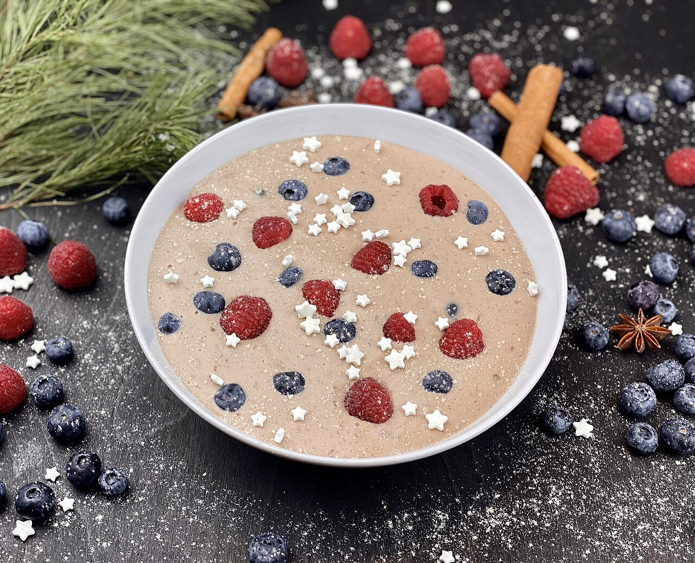

Home
Berry Porridge

Description
Quick, healthy and tasty breakfast. Full of fiber and vitamins
to start your day the right way. Sweet and delicious.
Ingredients:
- Oatmeal
- Plant milk (I recommend soy milk)
- Berries: Strawberries, Blueberries, Raspberries, Redcurrant
- Soy Crispies and Soy Flakes (for added protein)
Steps:
- Take your oatmeal into a hot pan and roast it for a nutty taste
- Add the berries and let them cook for a bit
- Add the milk and let everything combine
- Let simmer until the porridge thickens
- Serve warm in a bowl, add more berries and soy crispies and soy flakes as topping